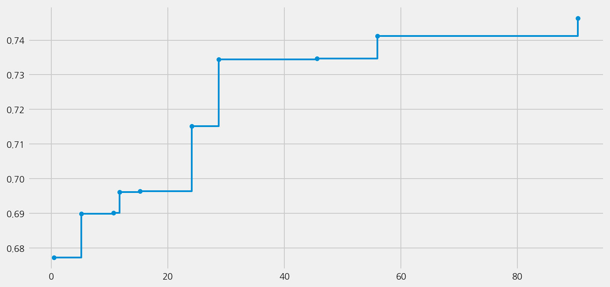
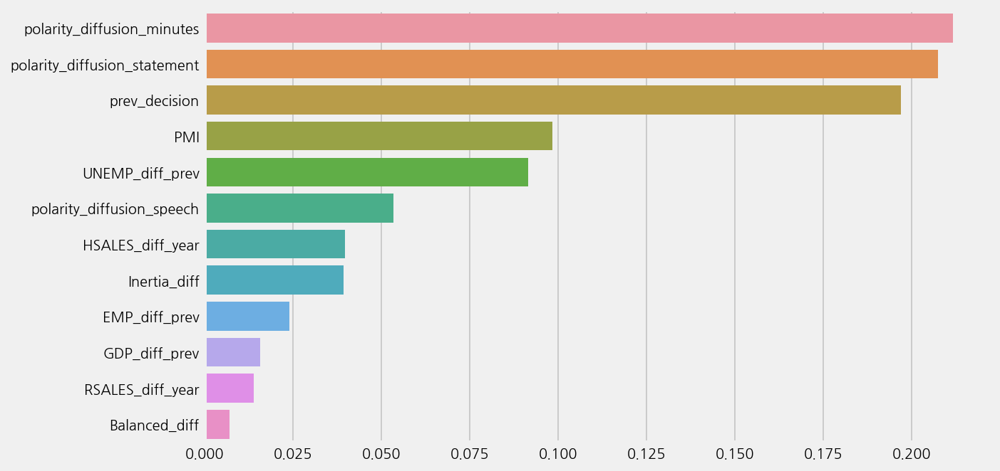

Predicting the next decisions with tones
Contents
Predicting the next decisions with tones¶
%config InlineBackend.figure_format='retina'
import logging
import warnings
from ekorpkit import eKonf
logging.basicConfig(level=logging.WARNING)
warnings.filterwarnings('ignore')
print("version:", eKonf.__version__)
print("is notebook?", eKonf.is_notebook())
print("is colab?", eKonf.is_colab())
print("evironment varialbles:")
eKonf.print(eKonf.env().dict())
version: 0.1.33+28.g90d1dea
is notebook? True
is colab? False
evironment varialbles:
{'EKORPKIT_CONFIG_DIR': '/workspace/projects/ekorpkit-book/config',
'EKORPKIT_DATA_DIR': None,
'EKORPKIT_PROJECT': 'ekorpkit-book',
'EKORPKIT_WORKSPACE_ROOT': '/workspace',
'NUM_WORKERS': 230}
data_dir = "../data/fomc"
Auto ML with LM tones¶
fs_cfg = eKonf.compose(config_group="dataset=feature")
fs_cfg.name = "fomc_tone_features_lm"
fs_cfg.data_dir = data_dir
model_cfg = eKonf.compose(config_group='model/automl=classification')
model_cfg.name = 'fomc_tone_lm'
model_cfg.dataset = fs_cfg
model_cfg.config.time_budget = 1000
model_cfg.verbose = False
model_lm = eKonf.instantiate(model_cfg)
model_lm.fit()
INFO:flaml.searcher.blendsearch:No low-cost partial config given to the search algorithm. For cost-frugal search, consider providing low-cost values for cost-related hps via 'low_cost_partial_config'. More info can be found at https://microsoft.github.io/FLAML/docs/FAQ#about-low_cost_partial_config-in-tune
Best ML leaner: extra_tree
Best hyperparmeter config: {'n_estimators': 5, 'max_features': 0.2532691256970419, 'max_leaves': 14, 'criterion': 'entropy'}
Best accuracy on validation data: 0.7468
Training duration of best run: 0.1283 s
model_lm.best_estimator
ExtraTreesClassifier(criterion='entropy', max_features=0.2532691256970419,
max_leaf_nodes=14, n_estimators=5, n_jobs=-1)In a Jupyter environment, please rerun this cell to show the HTML representation or trust the notebook. On GitHub, the HTML representation is unable to render, please try loading this page with nbviewer.org.
ExtraTreesClassifier(criterion='entropy', max_features=0.2532691256970419,
max_leaf_nodes=14, n_estimators=5, n_jobs=-1)model_lm.save()
model_lm.load()
model_lm.show_results()
Best ML leaner: extra_tree
Best hyperparmeter config: {'n_estimators': 5, 'max_features': 0.2532691256970419, 'max_leaves': 14, 'criterion': 'entropy'}
Best accuracy on validation data: 0.7468
Training duration of best run: 0.1283 s
model_lm.plot_learning_curve()

model_lm.eval()
r2: -0.18417874396135314
mse: 0.6981132075471698
mae: 0.4339622641509434
Accuracy: 0.6981132075471698
Precison: 0.6084905660377359
Recall: 0.6981132075471698
F1 Score: 0.6282396848434585
Model Report:
___________________________________________________
precision recall f1-score support
Cut 0.75 0.33 0.46 9
Hike 0.00 0.00 0.00 8
Hold 0.71 0.94 0.81 36
accuracy 0.70 53
macro avg 0.49 0.43 0.42 53
weighted avg 0.61 0.70 0.63 53
model_lm.plot_feature_importance()

Auto ML with finbert tones¶
fs_cfg = eKonf.compose(config_group="dataset=feature")
fs_cfg.name = "fomc_tone_features_finbert"
fs_cfg.data_dir = data_dir
model_cfg = eKonf.compose(config_group='model/automl=classification')
model_cfg.name = 'fomc_tone_finbert'
model_cfg.dataset = fs_cfg
model_cfg.config.time_budget = 1000
model_cfg.verbose = False
model_finbert = eKonf.instantiate(model_cfg)
model_finbert.fit()
model_finbert.save()
INFO:flaml.searcher.blendsearch:No low-cost partial config given to the search algorithm. For cost-frugal search, consider providing low-cost values for cost-related hps via 'low_cost_partial_config'. More info can be found at https://microsoft.github.io/FLAML/docs/FAQ#about-low_cost_partial_config-in-tune
model_finbert.show_results()
model_finbert.plot_learning_curve()
model_finbert.eval()
model_finbert.plot_feature_importance()
Auto ML with T5 tones¶
fs_cfg = eKonf.compose(config_group="dataset=feature")
fs_cfg.name = "fomc_tone_features_t5"
fs_cfg.data_dir = data_dir
model_cfg = eKonf.compose(config_group='model/automl=classification')
model_cfg.name = 'fomc_tone_t5'
model_cfg.dataset = fs_cfg
model_cfg.config.time_budget = 1000
model_cfg.verbose = False
model_t5 = eKonf.instantiate(model_cfg)
model_t5.fit()
model_t5.save()
model_t5.show_results()
model_t5.plot_learning_curve()
model_t5.eval()
model_t5.plot_feature_importance()